Product Strategy & Discovery
Turning complex business requirements into clear product direction, roadmaps, and user journeys that teams can build.
Senior Product Designer · UX/UI Lead · Design Engineer a.k.a. Jott
I'm based in Manila, Philippines, and I take products from discovery and prototype all the way to production, designing them to be both beautiful and actually usable. I've built and launched two production apps on Google Play.
Enterprise SaaS I led, products I built and shipped myself, and design systems work.
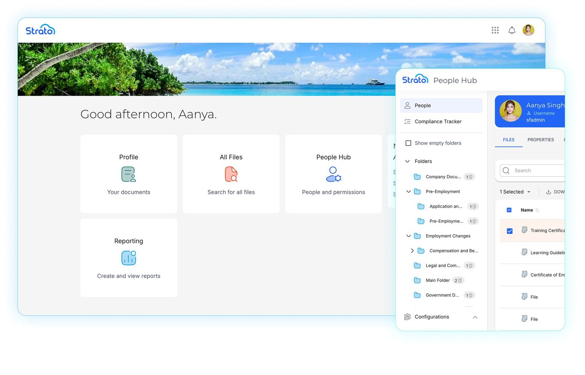
An HR document platform built for SAP SuccessFactors, covering automated document generation, approval workflows, and a secure Digital Employee File. Over four years at SpinifexIT I directed its UX strategy and product design: an overhaul that lifted task completion by 85%, and a Material design system that cut handoff time by 40%.
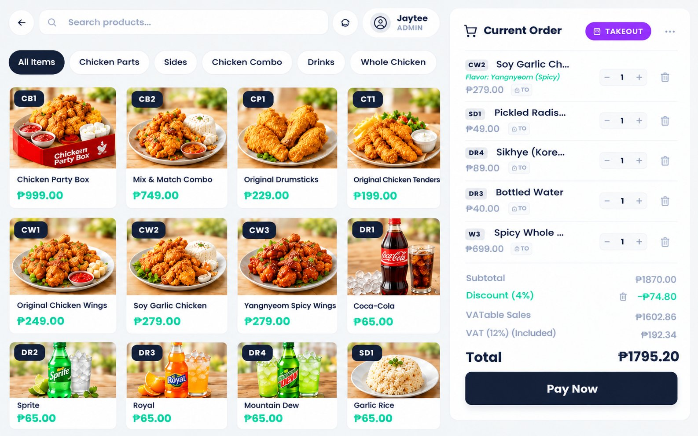
A cloud POS for small Philippine food businesses, running daily restaurant orders in Quezon. It ships as an Android app and an installable offline PWA, with a kitchen display, recipe-based inventory, scheduled reports, and AI marketing copy.
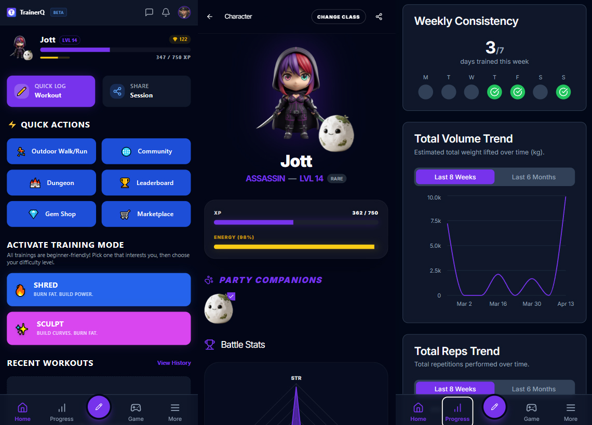
A gamified fitness and coaching platform: workouts earn XP, streaks and weekly goals level up your character, and AI suggests meal plans and workouts. It also has a coach marketplace, bookings, and messaging.
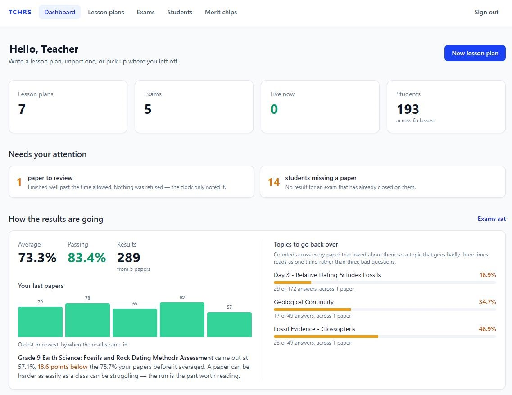
Turns teachers' lesson plans into exams, publishes them to class sections, and marks them automatically, even from photographed paper sheets.
Read chapter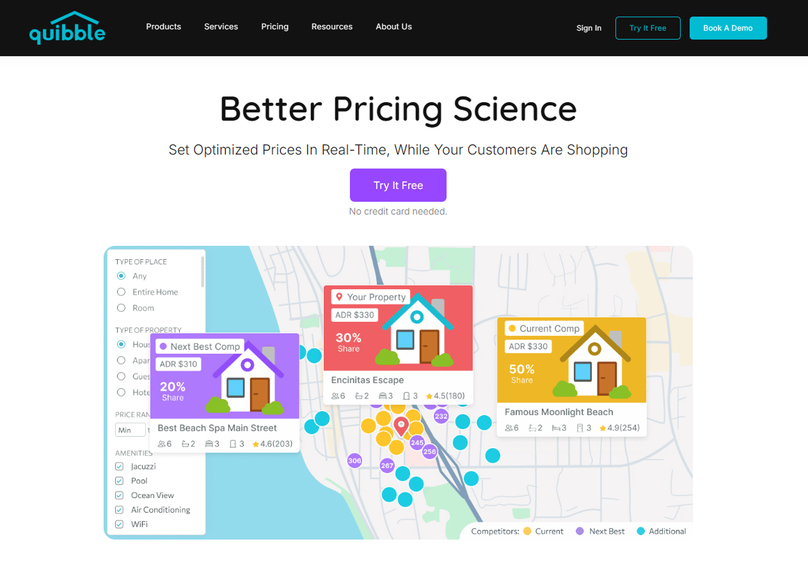
Better pricing science: it optimizes prices in real time while customers are shopping.
Read chapter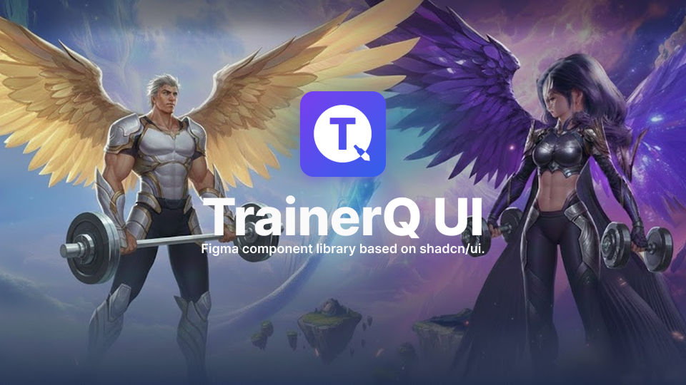
A Figma library built on shadcn/ui that mirrors the codebase component-for-component.
Read chapterHi! My name is George. My friends call me Jott, and you can too. I'm a Senior Product Designer and UX/UI Lead with 18 years of experience designing enterprise and consumer digital products.
I combine UX research, product strategy, design systems, accessibility, and front-end development with AI-assisted workflows to take products from discovery and prototype through production. My path started in Computer Science, so I'm as comfortable in an engineering standup as in a design critique.
At SpinifexIT I led a UX overhaul that improved task completion by 85% and built a Material design system that cut design-to-development handoff time by 40%. At DXC Technology, a redesign cut support calls by 60%. Today I lead product design, accessibility, and web architecture across a multi-brand ecosystem serving 8,500 active investors. On my own, I've built and shipped Kasenso POS, TrainerQ, and TCHRS.
From early discovery to a shipped release, I cover the full spectrum.
Turning complex business requirements into clear product direction, roadmaps, and user journeys that teams can build.
Interviews, contextual inquiry, usability and A/B testing, and analytics to ground every decision in real behavior.
Component libraries, design tokens, and WCAG 2.1 AA standards that keep multi-brand products consistent and inclusive.
Production-quality front-end in React, Vue, Tailwind, WordPress, and PWAs. I implement the interfaces I design.
Claude Code, Cursor, and AI Studio workflows that shrink iteration cycles from weeks to days, from prototype to release.
Design governance, critique, mentoring, and cross-functional partnership with product, engineering, and QA.
The career so far, one arc at a time.
Leading product design, accessibility, and web architecture across a multi-brand digital ecosystem serving 8,500 active investors.
Owned roadmap, product design, development, release, and support for three products built independently, two of them live on Google Play.
Directed UX strategy and product design execution for the enterprise Strato digital product suite.
Focused on enterprise digital transformation and customer self-service product optimization.
Plus freelance web design. See the work from these years in the archive →
STI College, Mandaluyong
January 2023
The archive: earlier case studies, front-end builds, and web & graphic design from my original portfolio.
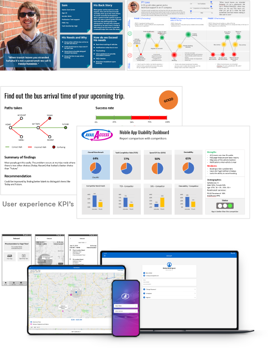
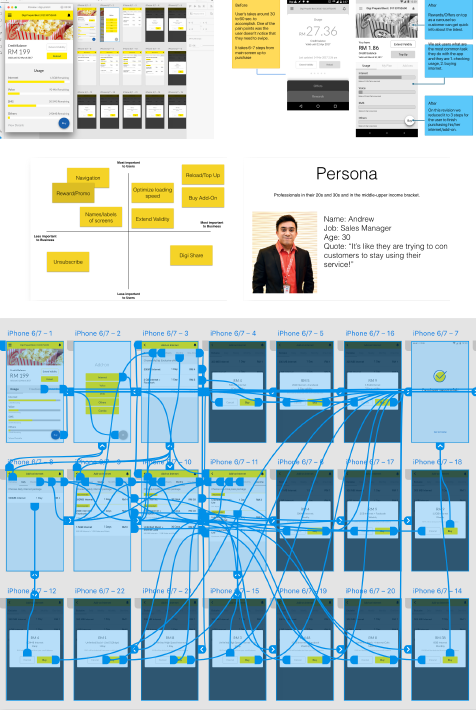
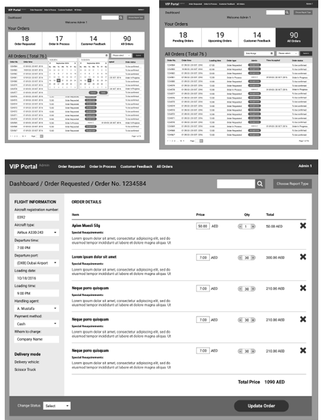
AvailAccess, Digi Telecoms, Emirates VIP Catering, and Wemu.io.
Explore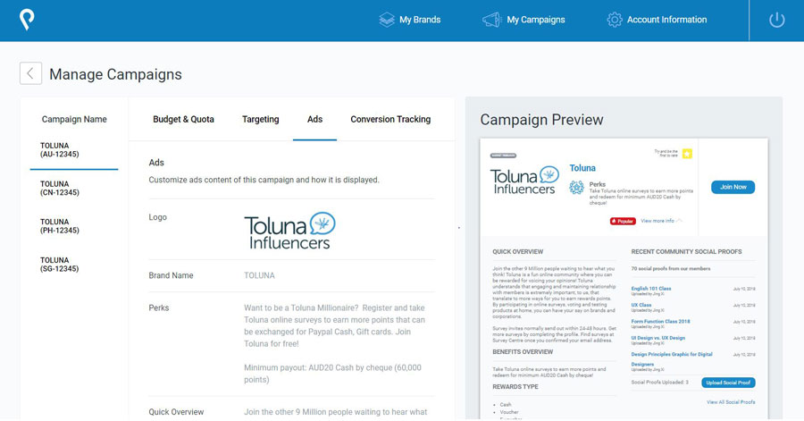
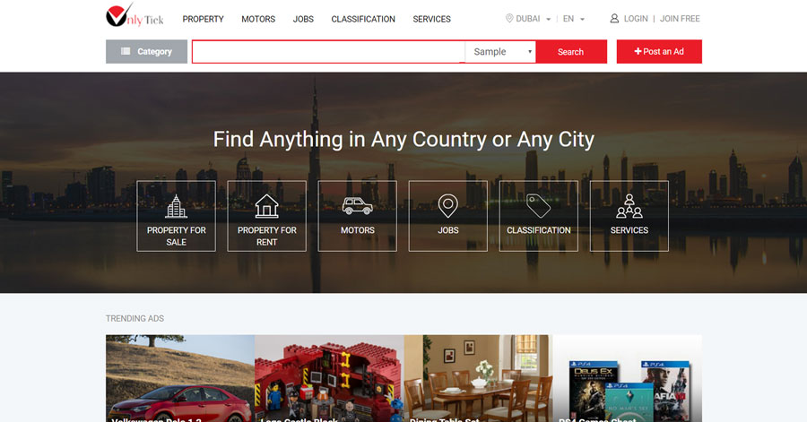
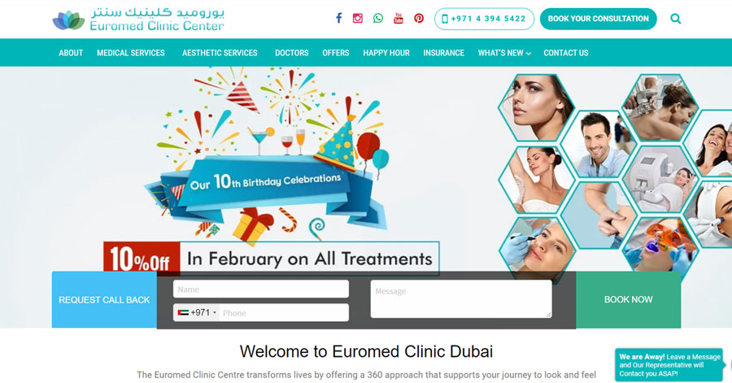
Client portals, e-commerce, and clinic sites in Vue, Laravel, Tailwind, and WordPress.
Explore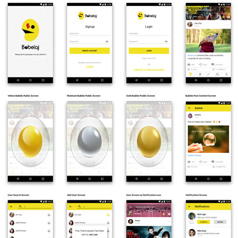
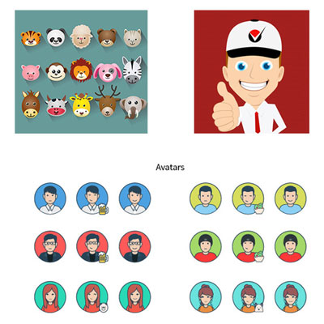
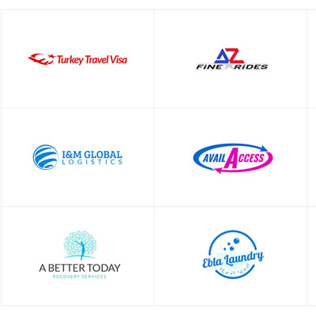
Websites, mobile apps, logos, print, and graphic arts.
ExploreI'm open to full-time roles, freelance projects, and collaborations. Whether you have a brief or just an idea, I'd love to hear from you.